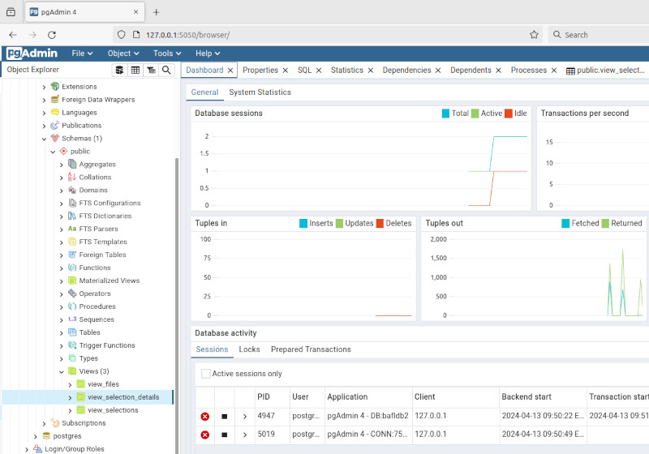

GUI - Python - Web/Desktop
PgAdmin4 is an example of a web application that can run locally or on a server.

"pgAdmin 4 is a complete rewrite of pgAdmin, built using Python and Javascript/jQuery. A desktop runtime written in NWjs allows it to run standalone for individual users, or the web application code may be deployed directly on a web server for use by one or more users through their web browser."